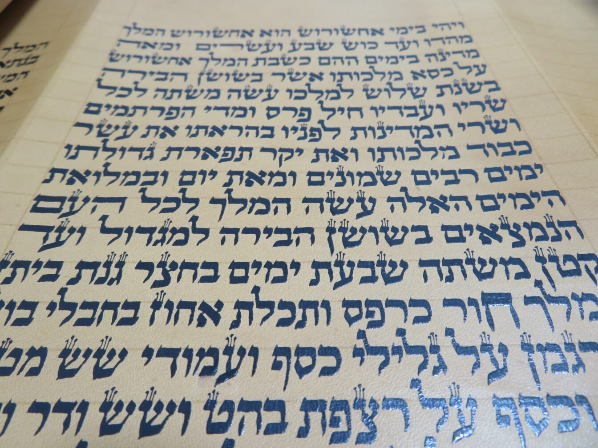

ההבדל בין סופר סת"ם למגיה סת"ם
ההבדל בין סופר סת"ם למגיה סת"ם
שלח הודעה עכשיו לכתובת Y0548431060@GMAIL.COM
פנה אלי אחד הסופרים ושאל: מהי בעיניך ההגדרה של מגיה טוב?
ושאלת השאלות: האם סופר סת"ם יכול להיות גם מגיה?
כבר כתבו הפוסקים שיש הבדל בין שני התפקידים. בקול יעקב (סי' ל"ב אות קי"ב) כתב שלסופר צריכה להיות תעודת סופר, ולמגיה תעודת מגיה. הדברים הללו אינם רק עניין טכני, אלא מבטאים הבדל מהותי במקצוע.
סופר ומגיה הם שתי תכונות שונות
סופר הוא אמן במלאכת הכתיבה. מגיה, לעומת זאת, הוא אדם בעל חוש ביקורת וטביעות עין. אלו שתי תכונות שונות.
וההבדל ביניהן מתבאר היטב במשל נפלא.
פיל ומגיה ומה שבינהם
מסופר על קבוצת עיוורים שעמדה לפני פיל וניסתה להבין מה עומד מולה. אחד נגע בחדק ואמר: זה צינור מים גמיש. השני מישש את האוזן וקבע: זו מניפה. שלישי אחז ברגל וטען: זה עמוד. ואחר שאחז בזנב נשבע שמדובר בחבל.
כל אחד מהם דיבר בביטחון גמור. כל אחד הרגיש חלק אמיתי מן המציאות. אבל כל אחד אחז רק חלק קטן מן הפיל.
הם לא טעו במה שהרגישו. הם טעו בכך שחשבו שהחלק הוא הכל.
כך גם בעולם הסת"ם.
יש מי שמומחה בצורת האותיות. יש מי שבקי בחסרות ויתרות. ויש מי ששולט בהלכות מגילה, ספר תורה או מזוזה. כל אחד מהם אוחז חלק חשוב.
אבל אם אדם מצמצם את ההגהה לתחום אחד בלבד, הוא דומה לעיוור שאחז בזנב הפיל וחשב שהבין את כולו. הוא רואה חלק – אך לא את התמונה השלמה.
מגיה אמיתי צריך לראות את התמונה כולה.
לראות את צורת האות ואת היחס בין חלקיה, לקשר את הבעיה לסוגיה הנכונה, להכיר סוגי כתב ומסורות שונות, להבין את נקודות החולשה של הסופר, ולזהות את המקומות המועדים לטעויות.
'החכם השלם'
אצל חכמי ספרד היו קוראים לאדם כזה ‘החכם השלם’ – אדם שאינו מצמצם את ידיעתו בתחום אחד בלבד, אלא רואה את התמונה כולה.
מסקנה
לכן בעיניי ההגדרה של מגיה טוב היא פשוטה: אדם שמסוגל לראות את כל הפיל.
אדם בעל חוש ביקורת וטביעות עין, שיודע לחבר פרטים רבים לתמונה אחת שלמה.
וכל המרבה בבדיקות הרי זה משובח.
בברכה
יוחאי אוחיון
מלמד סופרים בכתב הספרדי
